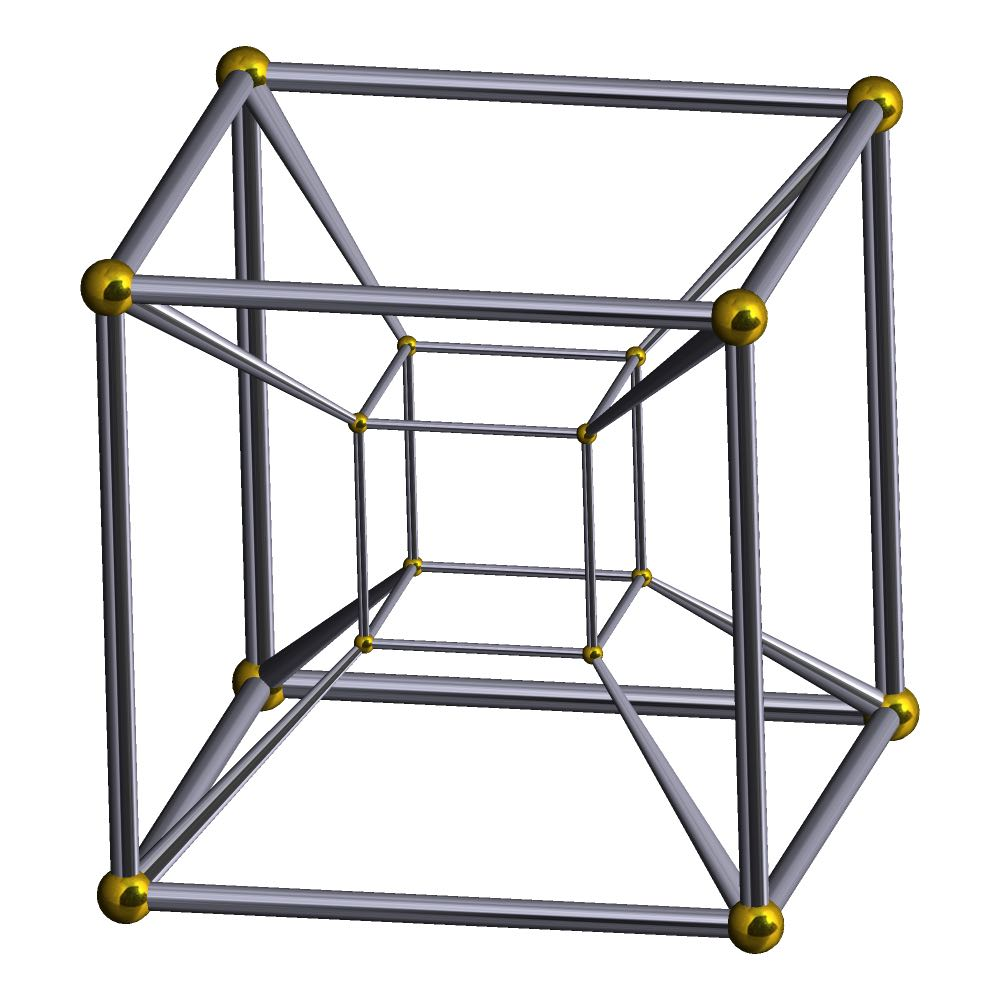
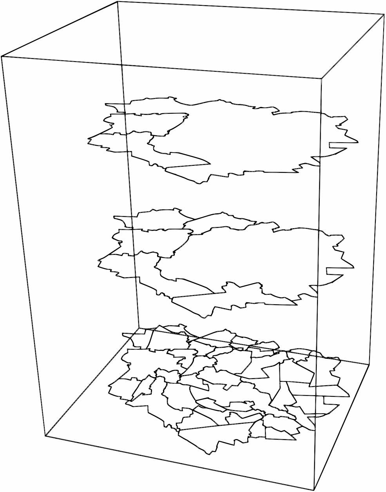
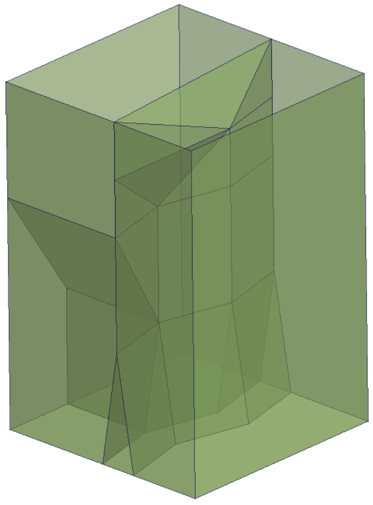

As presented in Chapter 3, the most common approaches to model 2D and 3D space are based on ad hoc adaptations of data structures that were originally meant for 2D data. These have many advantages, but are also necessarily limiting when 3D objects are concerned, constraining the class of objects that they are capable of representing efficiently and the operations that can be efficiently performed on them. Even data structures specifically defined for sets of 3D objects have significant limitations, such as not being able to store the incidence and adjacency relationships between objects. Moreover, when the data has to be integrated with non-spatial characteristics (e.g. time and scale), similar ad hoc adaptations to 2D structures are also used. Therefore, the problem of adequately representing 3D, spatio-temporal and multi-scale data is not fully solved even by the most advanced 3D structures as they are currently used in GIS.
This chapter presents the higher-dimensional spatial information modelling approach—the main theme of this thesis—as a solution to all these problems, as well as the higher-dimensional data models and data structures that can be used to realise it. §4.1 introduces the topic by showing the strong theoretical foundations behind higher-dimensional modelling. How higher-dimensional modelling works in general is then explained in §4.2, relating to relevant concepts of 2D/3D GIS whenever possible, as well as importing useful notions from other fields. §4.3 then describes the data models and data structures that can be used to realise the higher-dimensional modelling approach. §4.4 finalises the chapter by presenting some of the new possibilities provided by this approach.
Significant parts of §4.3 and §4.4 and minor parts of the other sections are based on the paper:
{% imbiber pubs/phd.bib one:15ijgis_ndstructures noimg %}
4.1 Foundations of higher-dimensional modelling
A radical departure from the traditional approaches to model 2D/3D space, time and scale in GIS, as presented in Chapter 3, consists in the representation of any number of parametrisable characteristics (e.g. the third spatial dimension, time and scale) as additional dimensions in a geometric sense. These dimensions are modelled so as to be orthogonal to each other, such that real-world 0D–3D entities are modelled as higher-dimensional objects53 embedded in higher-dimensional space, which are consequently stored using higher-dimensional data structures.
Higher-dimensional modelling is well grounded in long-standing mathematical theories. Descartes [1637] already laid the foundation for \(n\)D geometry by putting coordinates to space, allowing the numerical description of geometric primitives and the use of algebraic methods on them, theories of \(n\)D geometry were developed by Riemann [1868] among others, and Poincaré [1895] developed algebraic topology with a dimension-independent formulation, stating that even if \(n\)D objects could not be [then] represented, they do have a precise topological definition, and consequently properties that can be studied.
This approach opens the door to new possibilities. From an application point of view and as will be discussed in §4.2.3, 4D topological relationships between 4D objects provide insights that 3D topological relationships cannot. Also, McKenzie et al. [2001] contends that weather and groundwater phenomena cannot be adequately studied in less than four dimensions, and van Oosterom and Stoter [2010] argue that the integration of space, time and scale into a 5D model for GIS can be used to ease data maintenance and improve consistency, as algorithms could detect if the 5D representation of an object is self-consistent and does not conflict with other objects.
It is important to note that the higher-dimensional modelling approach—as presented in this thesis—bears no relation to the most common usage of 4D, 5D, 6D, …, \(n\)D GIS/BIM in both GIS product descriptions and the scientific literature. There, such terms are generally used as buzzwords that refer to any kind of support for the storage of time information, costs, project life cycles, or any other kind of non-spatial information. In most cases, this information is simply stored as a tuple of attributes that are appended to 2D/3D objects (e.g. timestamps), or as external structures that are unlinked to any objects with a geometric description (e.g. IFC scheduling information). If one were to interpret these objects geometrically, they would result in 2D/3D objects embedded in higher-dimensional space54, and not in higher-dimensional objects embedded in higher-dimensional space.
However, it is worth noting that real strides towards higher-dimensional GIS have been made in various forms. Research in multidimensional GIS aims at the integrated storage and analysis of heterogeneous objects of different dimensions [Raper, 2000; Gold, 2005], usually limited to 0D–3D objects but sometimes conceptually extended to higher dimensions. Storing and manipulating heterogeneous objects and their semantics is a difficult challenge and is a notable weak point of current GIS tools.
The concept of time as a dimension is an established concept with proven applications. As Couclelis [1999] states, time has historically been linked to space and often considered as another dimension, and the 4D spatiotemporal manifold known as the Minkowski space [Minkowski, 1908] is used in the description of special relativity in mathematics and physics55. The ISO 19108 standard also states that ‘time is a dimension analogous to any of the spatial dimensions’ [ISO, 2005b] A representation where time is modelled as one more spatial dimension has been moreover used in several applications, mostly in the form of 2D space+time, such as to analyse paths [Hägerstrand, 1970], to analyse motion in computer vision [Blank et al., 2005] and to visualise geographic information [Kraak, 2003]. 3D+time systems have also been frequently proposed, albeit this usually is meant only at a conceptual (rather than implementation) level [Galton, 2004]. In GIS and other fields, a 2D space+time representation is often called a space-time cube56.
Scale as a dimension has a shorter history, only recently being proposed as way to integrate 2D/3D space, time and scale [van Oosterom and Stoter, 2010]. Döllner and Buchholz [2005] consider the notion of the LOD of a model as a conceptual dimension. Grasset-Simon et al. [2006] discuss generalised map pyramids, which use \(n\)-dimensional generalised maps in order to create a hierarchical data structure of 2D/3D/\(n\)D images of different resolutions. Untereiner et al. [2015] introduce the Compact Primal Hierarchy, an also hierarchical representation of manifold meshes in any dimension which are generated through successive refinement operations. Finally, van Oosterom and Meijers [2014] discuss the integration of 2D maps at different scales in one 2D+scale model that is conceptually 3D—but is represented instead as a series of linked 2D structures—and is known as the space-scale cube57.
4.2 The higher-dimensional modelling paradigm
Considering the strong foundations of higher-dimensional modelling explained in §4.1, the higher-dimensional modelling of geographic information has great potential to integrate space (of any dimension) with any number of non-spatial characteristics. Such a representation is extremely powerful, capable of handling even complex situations like objects that are both changing shape (i.e. morphing) and moving in time, but it is also complex in several ways.
This section serves as a broad overview of the higher-dimensional modelling paradigm, covering the main conceptual difficulties in how these models work and describing intuitively what they look like. The first fundamental aspect, deciding which characteristics can and should be modelled as dimensions, is described in §4.2.1. Afterwards, considering that understanding how objects in more than three dimensions are hard to visualise, §4.2.2 explains intuitively what these objects look like based on 3D models using 2D+time and 2D+scale, as well as making analogies between the properties of higher-dimensional models and 2D/3D ones.
§4.2.3 discusses the key distinguishing feature of the higher-dimensional approach—the possibility to store and use topological relationships in arbitrary dimensions. Finally, §4.2.4 explains how the standard topological approach in GIS, creating a functional space partition from a set of objects, can also be used in higher dimensions to store these topological relationships in the data structures presented in §4.3.
4.2.1 Defining the characteristics to be modelled as dimensions
As powerful as higher-dimensional representations are, their advantages need to be balanced with the fact that higher-dimensional representations are large and complex. The size of such a model can be expected to increase roughly exponentially with the dimension—although the exact values are highly dependent on the model used and the data being represented. For example, consider the total number of cells of all dimensions in the family of hypercubes. A point has 1 cell, a line segment \(3\) (\(2+1\)) cells, a square \(9\) (\(4+4+1\)) cells, a cube \(27\) (\(8+12+6+1\)) cells and a tesseract, shown in Figure 4.1, \(81\) (\(16+32+24+8+1\)) cells.
Because of this, while many characteristics can be used as a dimension, only those characteristics where such modelling would bring significant benefits should be modelled in this manner. In fact, while there is no theoretical limit to the number of dimensions that can be used, the increasing space requirements of models with more dimensions generally limit the practical number of dimensions to 6–8.
There are various requirements and desirable properties in the characteristics that are to be modelled as additional dimensions. At minimum, such characteristics should be parametrisable (i.e. there should be a way to express them in terms of a parameter or parameters), so that these parameters can be entered into a computer, and preferably parametrised as numbers that determine the object’s position along the axes of the dimensions. Many other properties are not strictly necessary but are still very desirable, including that there is a parametric function that models the characteristic in a natural way, and that this function is invertible so that the object’s properties can be known from the inverse function. These are properties that are fulfilled by data that is quantitative in nature, which is related to measurements of an interval or ratio scale [Stevens, 1946]58.
In addition, there are certain properties of the data to be represented that determine if the higher-dimensional modelling approach is worth the added complexity and size. For this, it is possible to evaluate it by considering whether more compact alternatives are able to depict the situations that are present in the data. For instance, if the value of one of the characteristics can be determined from the others without added knowledge, the former can be simply obtained from the latter. Also, when a given characteristic has a bounded number of values for every possible combination of the other characteristics, the former can be stored more efficiently as an attribute. A typical example of this latter case is a 2.5D terrain model, where there is only one height (\(z\)) value for any given combination of \((x,y)\) coordinates. Caves, tunnels, overhangs and arches are thus problematic.
Time and scale—the examples used throughout this thesis—comply with most of the properties mentioned above. They are both intuitively quantifiable in a meaningful way. For instance, a point along a temporal axis defines a moment in time such that points on one side of it occur before it and points on the other side of it occur after it. Similarly, an object at a given LOD is finer than those at a lower LOD and coarser than those at a higher LOD. Moreover, in the general case, an object’s position in time or its geographic scale cannot be known based solely on its position in 2D or 3D space, and an object can be at the same position at different moments in time (e.g. by not moving) or at different scales.
4.2.2 How higher-dimensional data looks
To understand how data modelled using the higher-dimensional modelling paradigm looks, it is easier to first consider a case with a two-dimensional space plane \((x,y)\) where time is added as a third dimension. In this configuration, a set of 2D objects, each of which exists for one or more intervals of time, can be represented as a set of volumes. The simplest case is when these objects remain stationary, which is shown in Figure 4.2. In this case, the shape of the resulting volume is an extrusion of the original 2D shape along the time axis. Such a volume has a prismatic shape and can be generated using the methods that will be described in Chapter 6. As shown in Figure 4.3, applying translation, rotation or scale transformations to the 2D object during a time interval yield other volumes that have an intuitive shape.
(a) Original
(b) Translation
(c) Rotation
(d) Scaling
Figure 4.3: In a 2D+time setting, applying certain transformations to (a) a polygon during a time interval results in: (b) a parallelepiped in the case of a translation, (c) a screw shape with curved surfaces similar to a twisted prism in the case of a rotation, and (d) a frustum in the case of scaling.↩
In the context of geographic information, where many kids of features are represented as planar partitions of polygons, the resulting 2D space+time polyhedra form a 3D space partition—if the polygons do not overlap, the resulting polyhedra do not overlap either. This property is later exploited by the extrusion algorithm in Chapter 6. Moreover, as shown in Figure 4.4, such a representation can represent the state of the partition at any point in time. At any one moment in time (i.e. a slice perpendicular to the 2D space plane), a polygon is still represented as a polygon but one that is embedded in 3D space, parallel to the 2D space plane \((x,y)\) and orthogonal to the time axis. Every object existing (and not moving or changing shape) during a time period would then be prism shaped, with identical base and top faces that are parallel to the 2D space plane and the other faces being orthogonal to it.
Figure 4.4: A 2D space \((x,y)\) + time (the vertical axis \(t\)) view of the footprint of two buildings. These buildings were separate at \(t = t_{0}\), were then connected by a corridor (red) at \(t = t_{1}\), then became disconnected again when the corridor was removed at time \(t_{2}\). This configuration remains unchanged until time \(t = t_{3}\). The times \(t_0\), \(t_1\), \(t_2\) and \(t_3\) are shown as points along the thick line representing the front right corner of the building on the left.↩
Extending this to a 4D representation of 3D space and time, a set of polyhedra can be represented as a set of polychora59. At any one moment in time, a polyhedron is still represented as a polyhedron but one that is embedded in 4D space. If it is not moving or changing shape, it would take the form of a prismatic polychoron. As in the previous cases, if the polyhedra form a 3D space subdivision, the polychora form also a 4D space subdivision.
In the same fashion as the 2D space+time case, it is possible to create similar 3D representations where 2D space is combined with scale as a third dimension. As shown in Figure 4.5, such a representation of a planar partition of polygons at different scales results in a 3D space subdivision where at each scale point there is still a planar partition. As shown in Figure 4.6 and discussed by Meijers [2011], this approach enables the storage of continuous levels of detail—an approach that can be extended to higher dimensions as well [Stoter et al., 2012a, b].
In a general setting, it is then possible to define an \(n\)-dimensional model where a set of 0D–3D objects are integrated with any number of additional characteristics and modelled as up-to-\(n\)-dimensional objects embedded in \(n\)-dimensional space. These higher-dimensional objects can be stored or used for analysis as is, or 0D–3D objects can be extracted from them by looking at specific ‘slices’ of these objects—intersections of the objects with specific subsets of space (e.g. a plane parallel to the 2D space plane), projections to certain planes or regions of 3D space, or more broadly, transformations to arbitrarily defined 2D/3D coordinate systems. This is described in more detail in Chapter 9.
4.2.3 Topological relationships in higher dimensions
As described in §3.1.4, spatial data structures often consist of two aspects: (i) a combinatorial part, which consists of a set of primitives and some topological relationships between them, and (ii) an embedding that links these primitives to their geometry and attributes. This distinction is useful to give a more formal understanding of what topological relationships in higher dimensions are, as well as to highlight how the storage of higher-dimensional topological relationships in a combinatorial structure is the main aspect that differentiates higher-dimensional structures from 2D/3D ones.
This is clearer when considering the data structures that contain only 1D topological relationships, which are commonly used in GIS. For instance, in the Simple Features Specification [OGC, 2011], independent 2D primitives are defined as sequences of points (with coordinates) that are connected using implicit line segments. When structures constructed from these 2D primitives are described (e.g. planar partitions or polyhedra), they are simply considered as sets of these 2D primitives. Apart from the relations used to define that a primitive belongs to a set, no other information is stored explicitly and the 2D primitives are therefore independent from each other. Since the implicit line segments in every 2D primitive are known to be adjacent but nothing is known about the relationships between the 2D primitives themselves, such data structures can be considered to store up to 1D topological relationships only (adjacencies between edges and the incidences between edges and vertices). By contrast, a data structure without even these topological relationships could consist of an unordered soup of line segments defined by their endpoints, which are repeated in every line segment in which they are present.
Despite their apparent limitations, these types of structures can be in fact used to store objects of any dimension thanks to the Jordan-Brouwer theorem [Lebesgue, 1911; Brouwer, 1911] described in §3.1.2. Just as independent 2D primitives are defined as sequences of points (with coordinates) that are connected using implicit line segments, 3D primitives can be then represented as sets of such 2D elements, which are otherwise unlinked, and \(n\)D objects can be represented as aggregations of their \((n-1)\)D-face bounding elements. This property is later exploited in the incremental construction scheme proposed in Chapter 7. Since every point in such an object can have any number of coordinates, an \(n\)D object can be embedded in \(n\)D space as well.
However, such representations become exponentially more inefficient as the dimension increases: lower-dimensional primitives need to be encoded multiple times, recursively once for each time they appear in a higher-dimensional primitive. This means that they are difficult to navigate and that even simple geometric and topological queries involve searching many objects [Hazelton, 1998]. As an example, it is possible to consider Simple Features-like [OGC, 2011] representations of simple objects of various dimensions, as shown in Figure 4.7. A Simple Features-like representation of a square does not repeat most60 vertices, while one of a cube repeats every vertex at least three times, one of a tesseract (their four-dimensional analogue) repeats every vertex at least 12 times and one of a 5-cube at least 60 times.
[[0, 0], [0, 1], [1, 1], [1, 0], [0, 0]]
(a) square
[[[0, 0, 0], [0, 1, 0], [1, 1, 0], [1, 0, 0], [0, 0, 0]], [[0, 0, 0], [0, 1, 0], [0, 1, 1], [0, 0, 1], [0, 0, 0]], [[0, 1, 0], [1, 1, 0], [1, 1, 1], [0, 1, 1], [0, 1, 0]], [[1, 1, 0], [1, 0, 0], [1, 0, 1], [1, 1, 1], [1, 1, 0]], [[1, 0, 0], [0, 0, 0], [0, 0, 1], [1, 0, 1], [1, 0, 0]], [[0, 0, 1], [0, 1, 1], [1, 1, 1], [1, 0, 1], [0, 0, 1]]]
(b) cube
[[[[0, 0, 0, 0], [0, 1, 0, 0], [1, 1, 0, 0], [1, 0, 0, 0], [0, 0, 0, 0]], [[0, 0, 0, 0], [0, 1, 0, 0], [0, 1, 1, 0], [0, 0, 1, 0], [0, 0, 0, 0]], [[0, 1, 0, 0], [1, 1, 0, 0], [1, 1, 1, 0], [0, 1, 1, 0], [0, 1, 0, 0]], [[1, 1, 0, 0], [1, 0, 0, 0], [1, 0, 1, 0], [1, 1, 1, 0], [1, 1, 0, 0]], [[1, 0, 0, 0], [0, 0, 0, 0], [0, 0, 1, 0], [1, 0, 1, 0], [1, 0, 0, 0]], [[0, 0, 1, 0], [0, 1, 1, 0], [1, 1, 1, 0], [1, 0, 1, 0], [0, 0, 1, 0]]], [[[0, 0, 0, 0], [0, 1, 0, 0], [1, 1, 0, 0], [1, 0, 0, 0], [0, 0, 0, 0]], [[0, 0, 0, 0], [0, 1, 0, 0], [0, 1, 0, 1], [0, 0, 0, 1], [0, 0, 0, 0]], [[0, 1, 0, 0], [1, 1, 0, 0], [1, 1, 0, 1], [0, 1, 0, 1], [0, 1, 0, 0]], [[1, 1, 0, 0], [1, 0, 0, 0], [1, 0, 0, 1], [1, 1, 0, 1], [1, 1, 0, 0]], [[1, 0, 0, 0], [0, 0, 0, 0], [0, 0, 0, 1], [1, 0, 0, 1], [1, 0, 0, 0]], [[0, 0, 0, 1], [0, 1, 0, 1], [1, 1, 0, 1], [1, 0, 0, 1], [0, 0, 0, 1]]], [[[0, 0, 0, 0], [0, 1, 0, 0], [0, 1, 1, 0], [0, 0, 1, 0], [0, 0, 0, 0]], [[0, 0, 0, 0], [0, 1, 0, 0], [0, 1, 0, 1], [0, 0, 0, 1], [0, 0, 0, 0]], [[0, 1, 0, 0], [0, 1, 1, 0], [0, 1, 1, 1], [0, 1, 0, 1], [0, 1, 0, 0]], [[0, 1, 1, 0], [0, 0, 1, 0], [0, 0, 1, 1], [0, 1, 1, 1], [0, 1, 1, 0]], [[0, 0, 1, 0], [0, 0, 0, 0], [0, 0, 0, 1], [0, 0, 1, 1], [0, 0, 1, 0]], [[0, 0, 0, 1], [0, 1, 0, 1], [0, 1, 1, 1], [0, 0, 1, 1], [0, 0, 0, 1]]], [[[0, 1, 0, 0], [1, 1, 0, 0], [1, 1, 1, 0], [0, 1, 1, 0], [0, 1, 0, 0]], [[0, 1, 0, 0], [1, 1, 0, 0], [1, 1, 0, 1], [0, 1, 0, 1], [0, 1, 0, 0]], [[1, 1, 0, 0], [1, 1, 1, 0], [1, 1, 1, 1], [1, 1, 0, 1], [1, 1, 0, 0]], [[1, 1, 1, 0], [0, 1, 1, 0], [0, 1, 1, 1], [1, 1, 1, 1], [1, 1, 1, 0]], [[0, 1, 1, 0], [0, 1, 0, 0], [0, 1, 0, 1], [0, 1, 1, 1], [0, 1, 1, 0]], [[0, 1, 0, 1], [1, 1, 0, 1], [1, 1, 1, 1], [0, 1, 1, 1], [0, 1, 0, 1]]], [[[1, 1, 0, 0], [1, 0, 0, 0], [1, 0, 1, 0], [1, 1, 1, 0], [1, 1, 0, 0]], [[1, 1, 0, 0], [1, 0, 0, 0], [1, 0, 0, 1], [1, 1, 0, 1], [1, 1, 0, 0]], [[1, 0, 0, 0], [1, 0, 1, 0], [1, 0, 1, 1], [1, 0, 0, 1], [1, 0, 0, 0]], [[1, 0, 1, 0], [1, 1, 1, 0], [1, 1, 1, 1], [1, 0, 1, 1], [1, 0, 1, 0]], [[1, 1, 1, 0], [1, 1, 0, 0], [1, 1, 0, 1], [1, 1, 1, 1], [1, 1, 1, 0]], [[1, 1, 0, 1], [1, 0, 0, 1], [1, 0, 1, 1], [1, 1, 1, 1], [1, 1, 0, 1]]], [[[1, 0, 0, 0], [0, 0, 0, 0], [0, 0, 1, 0], [1, 0, 1, 0], [1, 0, 0, 0]], [[1, 0, 0, 0], [0, 0, 0, 0], [0, 0, 0, 1], [1, 0, 0, 1], [1, 0, 0, 0]], [[0, 0, 0, 0], [0, 0, 1, 0], [0, 0, 1, 1], [0, 0, 0, 1], [0, 0, 0, 0]], [[0, 0, 1, 0], [1, 0, 1, 0], [1, 0, 1, 1], [0, 0, 1, 1], [0, 0, 1, 0]], [[1, 0, 1, 0], [1, 0, 0, 0], [1, 0, 0, 1], [1, 0, 1, 1], [1, 0, 1, 0]], [[1, 0, 0, 1], [0, 0, 0, 1], [0, 0, 1, 1], [1, 0, 1, 1], [1, 0, 0, 1]]], [[[0, 0, 1, 0], [0, 1, 1, 0], [1, 1, 1, 0], [1, 0, 1, 0], [0, 0, 1, 0]], [[0, 0, 1, 0], [0, 1, 1, 0], [0, 1, 1, 1], [0, 0, 1, 1], [0, 0, 1, 0]], [[0, 1, 1, 0], [1, 1, 1, 0], [1, 1, 1, 1], [0, 1, 1, 1], [0, 1, 1, 0]], [[1, 1, 1, 0], [1, 0, 1, 0], [1, 0, 1, 1], [1, 1, 1, 1], [1, 1, 1, 0]], [[1, 0, 1, 0], [0, 0, 1, 0], [0, 0, 1, 1], [1, 0, 1, 1], [1, 0, 1, 0]], [[0, 0, 1, 1], [0, 1, 1, 1], [1, 1, 1, 1], [1, 0, 1, 1], [0, 0, 1, 1]]], [[[0, 0, 0, 1], [0, 1, 0, 1], [1, 1, 0, 1], [1, 0, 0, 1], [0, 0, 0, 1]], [[0, 0, 0, 1], [0, 1, 0, 1], [0, 1, 1, 1], [0, 0, 1, 1], [0, 0, 0, 1]], [[0, 1, 0, 1], [1, 1, 0, 1], [1, 1, 1, 1], [0, 1, 1, 1], [0, 1, 0, 1]], [[1, 1, 0, 1], [1, 0, 0, 1], [1, 0, 1, 1], [1, 1, 1, 1], [1, 1, 0, 1]], [[1, 0, 0, 1], [0, 0, 0, 1], [0, 0, 1, 1], [1, 0, 1, 1], [1, 0, 0, 1]], [[0, 0, 1, 1], [0, 1, 1, 1], [1, 1, 1, 1], [1, 0, 1, 1], [0, 0, 1, 1]]]]
(c) tesseract
Figure 4.7: Simple Features-like representations of a unit square, cube, and tesseract. One face (per volume and per 4-cell) is shown in each line. Due to the repetition of structures in this type of representation, a 5-cube, which has only 80 faces, requires 480 lines to be represented, which is 10 times the number of lines and 12.16 times the number of characters used to represent the tesseract in (c).↩
Because of this, in a similar vein to the definition of the dimensionality of a GIS in Hazelton et al. [1990], it is possible to consider that the defining characteristic of a higher-dimensional spatial data structure is not the ability to be embedded into higher-dimensional space, but being able to explicitly store topological relationships in a dimension-independent manner.
Moreover, topological relationships in more than 3D have advantages other than efficiency of representation. For instance, 4D topological relationships between 4D objects provide insights that 3D topological relationships cannot, such as by using the dual graph of such a 4D structure for applications such as space-time wayfinding and analysis. This will be discussed in more detail in §5.4.
4.2.4 Representing higher-dimensional objects as a space partition
In order to store the higher-dimensional topological relationships described in §4.2.3, it is a practical requirement is that the objects being represented can be made to functionally form a space partition. For this, it is possible to use the standard topological modelling approach used in GIS—utilising an intermediate type of representation where a set of (possibly overlapping) original objects is transformed into a set of non-overlapping regions, such that each of these regions represents a set of the original objects [Rossignac and O'Connor, 1989], which might be the empty set in the case of the regions that are not covered by any of the original objects (e.g. some holes). An original geometry can be obtained by performing a Boolean set union of the regions labelled as belonging to it.
This transformation can be computed in various ways. In 2D and 3D, all objects are generally first overlaid on top of each other, the intersections between their boundaries are computed, and new regions are obtained by finding closed connected regions uncrossed by any other boundaries (e.g. cycles in 2D) [de Berg et al., 1998, §2.3]. It is worth noting however that implementing such a procedure robustly in more than 3D is not a trivial undertaking.
Using this newly created space partition, even complex topological relationships between the original objects can be reduced to a combination of set membership, adjacency and incidence. In fact, many schemes of topology in GIS can be implemented solely on inspecting which objects are in a set [Egenhofer and Franzosa, 1991; Worboys, 1992b; Güting et al., 2000]. These can be very intuitive, as they often have direct correspondences to natural language equivalents (e.g. ‘inside’, ‘touches’, ‘equals’, etc.) [Dube and Egenhofer, 2012].
Moreover, it possible to use the data structures presented in §4.3 to store a traversable structure containing the objects, in which the boundaries of the sets are explicitly represented, and to easily query the topological relationships that exist between the objects.
The most promising structures for higher-dimensional GIS are therefore those that starting from a space subdivision, are capable of storing a well-defined and relatively broad class of objects of arbitrary dimension, embedded into Euclidean space of the same or higher dimension, attributes attached to such objects, and enough topological relationships between them to allow for the quick traversal of the structure and for basic operations, such as testing if two given objects are identical, adjacent or overlapping.
4.3 Higher-dimensional data models and structures
This section presents all the main possibilities to represent dimension-independent objects, which are presented as a series of data models, each with related data structures. These are: exhaustive enumeration (e.g. rasters) in §4.3.1, hierarchical space subdivisions using simple tree-like structures (e.g. BSP-trees) in §4.3.2, more general implicit vector models (e.g. constructive solid geometry) in §4.3.3, geometric simplicial complexes (i.e. triangulations) in §4.3.4, cell complexes in §4.3.5, and ordered topological models (e.g. generalised and combinatorial maps) in §4.3.6. Short notes on other, less relevant vector data structures are discussed in §4.3.7.
Exhaustive enumeration
Exhaustive enumeration in higher dimensions works in a similar manner as in 2D and 3D. The shape of an \(n\)-dimensional domain is first specified, generally opting for a simple shape such as an axis-parallel \(n\)-orthotope, the \(n\)-dimensional analogue of a 2D rectangle or a 3D box (more formally a cuboid), which can be defined based on two points in \(\mathbb{R}^n\) on opposite corners of the orthotope. Afterwards, a simple deterministic rule is then used in order to partition the domain directly into \(n\)-cells. A programatic order or path that traverses all cells is defined, and the order of the path along these cells is used to record whether a cell belongs to the interior of the object or not, or in the case of multiple objects, which objects are present inside a cell.
Regular tessellations involve the subdivision of \(n\)-dimensional space directly into primitive cells forming regular \(n\)-polytopes—the \(n\)-dimensional analogue of regular polygons and regular polyhedra. A regular \(n\)-polytope is one whose bounding faces are regular \((n-1)\)-polytopes61. As in 2D and 3D, it is possible to create arbitrary rules in order to produce cells of any shape and size, which can be used to create optimal configurations that are related to \(n\)-ball packing or kissing number problems in geometry [Conway and Sloane, 1992]. For instance, such cells could be arranged in the form of the optimal 24-cell honeycomb in 4D.
However, operations on these optimum configurations can be rather complex. Axis-aligned regular grids consisting of congruent orthotopes, such as those taking the form of pixels in 2D and voxels in 3D, are much simpler in practice and offer a good enough approximation for practical purposes.
As in 2D and 3D, semi-regular tessellations, which consist of more than one type of polytope are also possible but are significantly more complex in practice. Creating optimal configurations of these tessellations is a problem related to the unequal hypersphere packing, as the general aim is still to create polytopes that are as close to balls (of appropriate sizes) as possible.
Exhaustive enumeration schemes are relatively straightforward even in higher dimensions and can be stored and processed using similar techniques as their 2D and 3D counterparts. However, these representations suffer from the same problems as 2D/3D grids: they are incapable of representing precise boundaries, their contents vary when they are translated, rotated or scaled, and are cumbersome for the representation of objects [Fisher, 1997], especially when they are of mixed dimensions. Moreover, they have extremely high space requirements—increasing exponentially with the dimension in grids with a similar number of divisions along each dimension.
Nevertheless, up to 4D grids using time as a dimension have been used in the context of GIS since the 1990s. These are currently used widely for computer simulations in various fields and have recently been implemented in standard GIS software62. Much earlier, Mason et al. [1994] implemented a system using a 4D grid of ocean temperatures with support for interpolation and generalisation operations. Bernard et al. [1998] also implemented a 4D grid of atmospheric variables (e.g. temperature, wind or pollution), which can be used for simulations.
Also worth noting is that outside the domain of GIS, the use of magnetic resonance (MRI) and computer tomography (CT) equipment has greatly increased the availability of acquired 4D raster images on which computational methods are often applied [Lorenzo-Valdés et al., 2004]. Similar methods are also applied on numerical simulations generated in other fields, such as the computation of topological invariants in metallurgy [Kaczynski et al., 2004].
4.3.2 Hierarchical subdivisions using trees
Higher-dimensional hierarchical subdivisions using trees also work in a similar fashion as their 2D and 3D counterparts. An \(n\)-dimensional domain is specified, which generally has a simple shape. It is then subdivided using ‘partition’ primitives, which attempt to split space incrementally in an adaptive manner—each primitive recursively partitioning the space defined by its parent so that the shape of the cells in the subdivision is only known after traversing a path in the tree from its root to a leaf representing the last relevant partition primitive. Even though this means that it is necessary to traverse many nodes in order to extract a single cell, this makes it possible to use a custom partition at every step and so store cells of varying sizes more efficiently.
Many different structures with only small variations have been created for this purpose, of which hyperoctrees, bintrees and k-d trees are by far the most widely used. The simplest possibility is to recursively subdivide space along all dimensions homogeneously at their midpoints at every partition primitive, so that one partition primitive subdivides \(n\)D space into \(2^n\) regions. Hyperoctrees [Yau and Srihari, 1983] and k-trees [Jackins and Tanimoto, 1983] do this, being identical dimension-independent generalisations of quadtrees [Finkel and Bentley, 1974] in 2D and octrees [Meagher, 1980] in 3D. Bintrees [Samet and Tamminen, 1985] instead split dimensions alternately rather than all at one, while k-d trees split dimensions at specified points rather than at their midpoints.
Hierarchical subdivisions using trees have also been previously used in a higher-dimensional GIS setting, usually combined with exhaustive enumeration approaches. Varma et al. [1990] defined HHCodes in order to perform efficient topological queries on abstracted 4-orthotopes, such as whether a pair of them overlap both spatially and temporally. O'Conaill et al. [1992] aggregated 4D raster images using trees, permitting the efficient storage of large sparse datasets. Mason et al. [1994] used 4D bintrees in order to index and perform fast queries and operations (e.g. interpolation and generalisation) on the aforementioned 4D grid of ocean temperatures.
4.3.3 (Implicit) vector models
Vector representations of \(n\)D objects avoid many of the problems present in exhaustive enumeration and tree-based subdivisions: they are generally more compact, can describe boundaries more precisely and can represent objects with their attributes directly. This makes them particularly interesting for higher-dimensional GIS, even if they have hardly been explored as the data structures commonly used in 2D vector GIS do not extend naturally to higher dimensions.
Among the possible vector-based structures, the ones that most naturally extend to higher dimensions are the more implicit models consisting of primitives that can be defined using a set of simple parameters. This includes many of the models discussed in §3.1.2, such as higher-dimensional versions of primitive instancing, sweep representations, constructive solid geometry, Boolean set operations on half-spaces and Nef polyhedra.
For instance, Paoluzzi et al. [2004] describes a scheme of dimension-independent Boolean operations on half-spaces. It is able to do these operations by combining the half-space constraints of multiple objects. Obtaining such a representation of an object can be achieved by performing (alternate) decompositions into convex parts [Bulbul and Frank, 2009; Lien and Amato, 2006].
This type of implicit approach might be especially useful in certain contexts, such as production processes and the computation of homologies [Damiand et al., 2008]. However, these are less capable of storing objects and their attributes directly, especially those of lower dimensionality, and therefore have to be generally ‘evaluated’ into another, more explicit model in order for them to be visualised [Mäntylä, 1988] or to perform the type of computations expected in GIS, such as geometric intersection operations. They are therefore less interesting for a higher-dimensional GIS.
Nevertheless, a possible future implementation of Nef polyhedra in arbitrary dimensions deserves an additional mention. As shown in §3.1.2, a set of Nef polygons can be reduced to a structure of sets of circular intervals and a set of Nef polyhedra to a structure of sets of faces on a sphere. This approach extends naturally to higher dimensions as the method can be recursively repeated in decreasing dimension in order to have a complete description of a higher-dimensional Nef polytope. However, the practical benefits of doing do decrease as the dimension increases and the navigation becomes more cumbersome. It is also very complex to implement this in a fully dimension-independent manner, requiring a hyperspherical projective kernel capable of representing cells of any dimension embedded on higher-dimensional spheres which is also capable of computing point-set intersections in any dimension. To the best of my knowledge, no such system has every been implemented, and it is unlikely to be implemented in the near future.
4.3.4 Geometric simplicial complexes
As described in §2.3.2, an \(i\)-dimensional simplex (\(i\)-simplex) is a combinatorial primitive made from a set of \(i+1\) vertices, and an \(j\)-simplex, \(j \leq i\), made from a subset of these is an \(j\)-dimensional face (\(j\)-face) of it. An \(n\)-dimensional geometric simplicial complex, also known as a Euclidean simplicial complex, is a subdivision of \(n\)-dimensional space into a structure of closed \(n\)-simplices directly embedded in space by attaching a tuple of coordinates to each vertex, in a manner that their interiors are non-overlapping geometrically (pairwise disjoint). In an \(n\)-dimensional simplicial complex, an \(i\)-dimensional object, \(i \leq n\), can be represented as a set of \(i\)-simplices. This allows the representation of objects of any dimension in a geometric simplicial complex.
An \(i\)-simplex is easily described by an \((i+1)\)-tuple of \(i+1\) affinely independent63 vertices \((v_{0}, v_{1}, \ldots, v_{i})\). Since they are affinely independent, the geometric realisation of a simplex is the convex hull of its vertices. A vertex in an \(n\)-dimensional simplicial complex can be described by an \(n\)-tuple of coordinates \((x_{0}, x_{1}, \ldots, x_{n-1})\), representing its embedding into \(n\)-dimensional Euclidean space. In a subdivision of \(n\)-dimensional space, every simplex in the simplicial complex is a face of at least one \(n\)-simplex.
Simplicial complexes have a simple but powerful structure and are easy to navigate. Two \(i\)-simplices are adjacent if they have a common face, and an \(i\)-simplex and a \(j\)-simplex, \(i \neq j\), are incident if either is a face of the other. In an \(n\)-dimensional simplicial complex, each \(n\)-simplex is adjacent to at most \(n+1\) other \(n\)-simplices and has exactly \(n+1\) \((n-1)\)-faces on its boundary. To each \(n\)-simplex it is therefore possible to apply \(n+1\) different boundary and neighbour operators, where the \(n\)-th boundary operator returns the \((n-1)\)-face of the \(n\)-simplex on the opposite side of the \(n\)-th vertex—obtained by removing the \(n\)-th element of the tuple of vertices—, and the \(n\)-th neighbour operator returns the adjacent \(n\)-simplex on the opposite side of the \(n\)-th vertex, if any, which is also incident to the face given by the \(n\)-th boundary operator.
The biggest challenge of using a geometric simplicial complex for the representation of \(n\)D objects is the difficulty of triangulating the possibly complex \(n\)D objects being modelled, i.e. algorithmically dividing them into non-overlapping geometric simplices so that the union of the simplices representing an object corresponds exactly to its original geometry. While triangulations of sets of points in \(n\)D have been studied extensively and there is robust software to compute them, e.g. Quickhull [Barber et al., 1996], such triangulations are generally not applicable to \(n\)D objects since a triangulation of the vertices of an object usually results in simplices that do not conform to the object’s boundary, i.e. that are partially inside and partially outside the object.
However, it is possible to make sure that the boundaries are part of the triangulation through the use of a constrained or conforming triangulation. Both of these force the triangulation to include certain simplices as part of the triangulation in the form of constraints, which in this case would be the objects’ boundaries. In a constrained triangulation, the constraints are directly part of the structure of the simplicial complex. While the properties of \(n\)D constrained triangulations have been described [Shewchuk, 2008] and algorithms to construct them in some cases have been developed [Shewchuk, 2000], their construction in the general case is very difficult in practice, having to deal with robustness issues and possibly requiring the addition of a large number of additional vertices (Steiner points) and subsequently additional simplices, as not every object of dimension three or higher is triangulable without additional vertices [Ruppert and Seidel, 1992], such as the Schönhardt polyhedron shown in Figure 4.8. In fact, it is already an NP-hard problem to determine whether a polyhedron is tetrahedralisable without adding Steiner points [Ruppert and Seidel, 1992]. Deciding where to best add these additional simplices in \(n\)D seems to be the hardest part of this problem64.
A conforming triangulation forces the triangulation to contain some constraints as well, but instead of adding them directly as simplices of the triangulation, it allows them to be split into multiple smaller simplices. This allows a conforming triangulation to fulfil other geometric criteria such as the Delaunay property (i.e. the circumsphere of a simplex does not contain any other vertex).
Unfortunately, while there are robust and reliable constrained and conforming triangulation libraries existing in 2D and 3D, such as Triangle in 2D [Shewchuk, 1996a], CGAL in 2D [Boissonnat et al., 2002], and Tetgen in 3D [Si and Gärtner, 2005], there seems to be no software capable of performing a constrained or conforming triangulation in more than 3D.
Assuming that the objects have been triangulated successfully, managing holes and disconnected components in a simplicial complex becomes trivial since these become integrated into the combinatorial structure of the triangulation, as will be discussed in §10.2. Generally, a triangulation algorithm works initially on the basis of a set of points and ensures that the entire convex hull of all of the points is triangulated, something that can be done using the concept of a ‘big triangle’ or faraway point [Liu and Snoeyink, 2008], and therefore connects formerly disconnected components or components that were not connected by using new simplices (\(n\)-simplices in an \(n\)D simplicial complex). Similarly, as the interiors of polytopes with holes are triangulated, additional simplices connect the void regions representing holes with the rest of the structure. In this manner, 2D holes can be represented as sets of triangles labelled as being empty, 3D holes as similar sets of tetrahedra, and so on for higher (and lower) dimensions. This ensures that it is always possible to navigate between all the simplices in the complex.
Another advantage of simplicial complexes is that many operations on them are efficient and easy. For instance, a simplicial complex can be traversed efficiently without any external data structure. Starting from any simplex, it is possible to ‘walk’ the simplicial complex in the desired direction in order to find any given simplex, e.g. inside which simplex a point is located [Devillers, 2002], with each walking step taking only constant time. Comparing objects composed of sets of simplices is also trivial, assuming that they have been triangulated in a deterministic way65, since they can be compared one by one (in order) after finding a common simplex, which can be done by walking the respective simplicial complexes. Checking if two objects are adjacent or intersect geometrically are examples of other operations that can be done simply and efficiently simplex by simplex.
Since the number of incident vertices, bounding \((n-1)\)-faces and adjacent simplices of an \(n\)-simplex in an \(n\)-dimensional simplicial complex is fixed and known, it is easily represented in a computer using simple arrays, rather than linked lists or other variable-length data structures. This can be done through an \(n\)-simplex-based data structure, shown in Figure 4.9 for 2D, where \(n\)-simplices are the main primitives. Related data structures are often said to to follow the adjacency or incidence model, depending on the dimensions of the simplices that are represented in the structure—only the highest-dimensional ones in the adjacency model, but possibly all in the incidence model.

(a)
(b)

(c)


(d)
(e)
(f)
Figure 4.9: Some of the possible relationships between primitives and the storage of a geometry using a 2-simplex (triangle) based data structure. (a) Adjacency relationships of a 2-simplex. (b) Boundary relationships of a 2-simplex. (c) Vertices of a 2-simplex. (d) Star (co-boundary) relationships of a 1-simplex. (e) Boundary relationships of a 1-simplex. (f) Embedding of a 0-simplex. In addition to these, it is also possible to store attributes for the 0-, 1-, and 2-simplices in embedding structures. The adjacency model uses at least (a), (c) and (f), while the incidence model uses at least (b), (e) and (f), plus usually (a) to navigate the structure. Many other combinations are possible.↩
An \(n\)-dimensional simplicial complex is thus represented as a collection of primitive \(n\)-simplices, each containing \(n+1\) links to its adjacent \(n\)-simplices. For the models described above, it also includes information containing:
- Adjacency model For every \(n\)-simplex, \(n+1\) links to vertex primitives containing the coordinates and attributes of its \(n+1\) vertices, or alternatively this information stored directly in the \(n\)-simplex. The simplices of dimensions 1 to \((n-1)\) and the incidence relationships between them, are therefore not represented explicitly.
- Incidence model For every \(i\)-simplex, \(\forall 0 < i \leq n\), \(i+1\) links to primitives containing the geometry and attributes for its \((i-1)\)-faces, or alternatively this information stored directly in the \(i\)-simplex. All simplices of every dimension, together with all their incidence relationships, can therefore be represented explicitly, or as part of a simplex of a higher-dimension.
The adjacency model thus forms an \((n+1)\)-regular graph with the \(n\)-simplices as nodes, i.e. a graph where every vertex has degree \(n+1\). The incidence model is a graph with a maximum degree \(n+1\), where the degree of a node representing an \(i\)-simplex is \(i+1\). Note that the adjacency model is therefore more compact, but only allows for the explicit representation of \(n\)-dimensional objects, while the incidence model is more verbose but supports the representation of objects of any dimension. This is done using the embedding information for the simplices of dimension lower than \(n\). Note that non-linear geometries (e.g. NURBS) can be represented as well using the embedding structures for the simplices of dimensions one and higher.
Additionally, since a simplex is also a cell, it is possible to use any data structure meant for more general cell complexes, such as those described in §4.3.5 and §4.3.6. This is commonly used in practice during the process of triangulating a cell complex (since at that point the structure is not a simplicial complex and cannot by definition be stored in a data structure for simplicial complexes only), but it is a very inefficient approach when it has already been triangulated.
Simplicial complexes in more than 3D are commonly described in theory but rarely put in practice. Paoluzzi et al. [1993] described the winged scheme in order to describe arbitrary polytopes as simplicial complexes, and Karimipour et al. [2010] uses lists of vertices to store simplices of any dimension in order to do spatial analysis using Delaunay triangulations as an example.
4.3.5 Cell complexes
For the purposes of a higher-dimensional data structure, cell complexes differ from simplicial complexes in two main related aspects: (i) there is a variable number of facets on the boundary of a cell, each of which has also a different number of facets, continuing recursively down to the vertex level; and (ii) obtaining a geometric interpretation of a cell requires looking recursively at its facets66. This causes cell complexes to have a much more complex representation and algebra to manipulate them compared to simplicial complexes. For instance, simplicial complexes can be easily constructed by adding and removing simplices expressed by sets of vertices, or by splitting and merging existing ones, but cell complexes require much more complex operations in order to add or remove cells—something that will be described in detail in Chapter 7. Traversing a cell complex (e.g. to find in which cell a point lies or to see which cells intersect a given geometry) is also much more difficult [de Berg et al., 1997].
However, the flexible structure of a cell complex allows it to represent objects either directly or with minimal preprocessing. As long as an \(i\)-dimensional object is homeomorphic to an \(i\)-ball—or can be modified so that it is functionally so by using simple ‘tricks’ at the combinatorial level—, it can be modelled as an \(i\)-cell in the complex with attached attributes. Also, the lower number of cells in a cell complex compared to the simplices in a simplicial complex representing the same set of objects means that they can store objects more efficiently, as long as an adequate data structure is used.
Cell complexes are usually modelled based on techniques that represent them based on their \((n-1)\)-dimensional boundary (i.e. boundary representation), unlike simplicial complexes in which objects are usually modelled using mainly primitives of the same dimension (i.e. object representation, but better known by its 3D name as solid or volume representation). This is a subtle distinction, but it implies that cells are described (and stored) in a more implicit manner based on a recursive definition, unlike simplices which can be stored explicitly as a tuple of vertices. Since this can slow down many operations, access to cells can be improved by adding indexing structures storing links to all the cells of a given dimension and/or to all the cells in a given spatial extent. On the other hand, the use of data structures for the cells of every dimension mean that these can be easily used to store attributes.
The most common data structures for arbitrary cell complexes are incidence graphs and other related structures [Rossignac and O'Connor, 1989; Masuda, 1993; Sohanpanah, 1989], which store all the cells (of every dimension) in a complex as individual embedding primitives containing geometric information and attributes. Just as with simplicial complexes, if only linear geometries are required, the only geometric information needed is the coordinates of the points for the 0-cells. However, since a set of vertices is not enough to describe a cell, all the embedding structures of every dimension need to exist (albeit they can be as simple as a unique ID or memory address per cell). As shown in Figure 4.10, these are connected through a combinatorial structure containing the incidence relationships between the cells, such as an \(i\)-cell having an \((i-1)\)-cell on its boundary, vice versa (known as the co-boundary or star), or both. Since the number of these incidences is generally not fixed or bounded, unlike in a simplicial complex, they are more difficult to integrate into the cell primitives. One solution involves using variable length data structures (e.g. a linked list of the facets of a cell). Another would be to store instead combinatorial primitives consisting of pairs of an \(i\)-cell and an \((i-1)\)-cell—an approach well-suited to a database implementation.
(a)
(b)
(c)
(d)
(e)
(f)
(g)
(h)
Figure 4.10: The cells in a cell complex, the most common relationships that are be stored in an incidence graph and similar data structures up to 2D, and the embedding of the 0-cells so as to support a geometry. (a) Three adjacent polygons. (b) The 0-, 1- and 2-cells in the cell complex. (c) Boundary relationships of a 2-cell. (d) Co-boundary relationships of a 1-cell. (e) Boundary relationships of a 1-cell. (f) Double co-boundary relationships of a 0-cell. (g) Co-boundary relationships of a 0-cell. (h) Embedding of a 0-cell. Note that (c), (e) and (h) correspond to the incidence graph, a minimal structure where every \(i\)-cell is linked to the \((i-1)\)-cells on its boundary.↩
While incidence graphs are efficient in terms of space, they are difficult to navigate and manipulate because of the limited topological information contained in them. This greatly complicates many relatively simple queries that are trivial in simplicial complexes, such as: obtaining the order of a sequence of 0- and 1-cells around a 2-cell; or checking if two \(n\)-cells have the same geometry (since their facets, each represented implicitly by its own facets, might be stored in any order).
One more possibility involves limiting the representation to cell complexes with stronger algebraic properties, such as those with a manifold domain. Most importantly for a spatial data model, manifolds have two very useful properties:
- An \(n\)-manifold with boundary has the property that its boundary is a \((n-1)\)-manifold, ensuring that an \(n\)-dimensional object can be represented recursively by its \((n-1)\)-dimensional boundary using a manifold data structure.
- An \((i-1)\)-cell is incident to at most two \(i\)-cells within an \((i+1)\)-cell67, limiting the number of links required between primitives in a boundary representation based model of the complex.
Some data structures for cell complexes in 2D and 3D are thus restricted to manifolds, or split objects into manifold sections [Pesco et al., 2004; Lopes and Tavares, 1997], which allows such data structures to be more efficient as they need to handle simpler configurations [Aguila and Ram.irez, 2003]. These are subsequently linked in a special structure that allows one to navigate around these ‘non-manifold parts’ [Weiler, 1988; Gursoz et al., 1990; Lee and Lee, 2001]. In higher dimensions, if the representation is restricted to a \(n\)-dimensional cell complex to manifold domains for each cell, an \((n-2)\)-cell is incident to at most two \((n-1)\)-cells, and thus \((n-2)\)-cells can be used as primitives or pointed to while being able to navigate around them.
One major difficulty with data structures based on cell complexes is dealing with holes and disconnected objects, both of which would ordinarily result in a disconnected graph using any of the data structures as described above. Since \(n\)-cells in a cell complex are assumed to be homeomorphic to open \(n\)-balls, holes violate the mathematical definition of a cell complex. However, an \(n\)-dimensional hole that is homeomorphic to an \(n\)-ball in an \(n\)-dimensional cell can be generally handled in an ad hoc manner using any of techniques shown in Figure 4.11 and described as follows:
- Splitting cells The \(i\)-cell containing an \(i\)-dimensional hole is subdivided into multiple \(i\)-cells, all of which are adjacent to it. This solution is conceptually simple and is effectively equivalent to what is done with simplicial complexes. This also best respects the mathematical definition of a cell, since the subdivided \(i\)-cells can be homeomorphic to \(i\)-balls and the hole is either non represented (when the dimension of the complex is higher than \(i\) and the hole is not completely bounded by other \(i\)-cells) or is represented as a cell like any other but labelled as being empty. However, finding a way to split a cell accordingly requires geometric operations and can be difficult in practice, especially in dimensions 3 and higher.
- Bridge cells A hole is connected to the rest of the combinatorial structure using a ‘bridge’ cell of lower dimensionality than the hole. This bridge cell usually takes the form of an edge connecting the hole with the cell where it is contained. This solution is generally simpler to implement, usually requiring only the finding of an appropriate bridge (e.g. an edge that lies entirely in the interior of the cell). While the cell containing the hole is no longer homeomorphic to a ball, most computations work with few or no changes [Bryant and Singerman, 1985]. However, some queries might need the addition of special cases to handle it (e.g. not displaying such an edge when visualising the cell or accounting for the fact the bridge will have the same cell on all sides in topological computations).
- Holes as attributes Holes can be stored as fully independent cells, linked as special attributes of the objects inside of which they are, or vice versa, something that can be extended so as to have full hierarchies of objects in a tree [Worboys, 2012]. This solution might be the simplest to implement in terms of storage, but it goes against the mathematical definition of a cell complex and will break or require a complex special treatment for geometric and topological computations. It is also very simple to inadvertently create invalid holes in this manner, such as holes lying (partially) outside the cell that is supposed to contain them.
The latter two described methods can be applied for disconnected components as well. Two disconnected components can be connected by a bridge cell, or all components can be considered as holes of the (empty) universe cell.
It is worth noticing that complex holes that are not homeomorphic to \(n\)-balls can exist, e.g. tori-shaped holes inside a volume, and finding a good subdivision that can be used to deal with such a hole might be very complex.
In terms of applications, cell complexes in more than 3D have been rarely described or implemented. Hazelton et al. [1990] described how incidence graphs can be put into a relational database schema in order to store 4D polytopes, on which 4D topological relationships can be queried [Hazelton et al., 1992]. However, to the best of my knowledge, this has never been put into practice in a working system.
4.3.6 Ordered topological models
Ordered topological models are a representation method that combines characteristics of both simplicial complexes and cell complexes, and are therefore commonly grouped with either of them [de Floriani and Hui, 2005; Čomić and de Floriani, 2012]. They work on the basis of a cell complex, but subdivide each cell into abstract simplices using a purely combinatorial operation, a concept derived from what is known as an abstract simplicial complex in algebraic topology.
The exact subdivision that is used depends on the data structure, but as shown in Figures 4.12 and 4.13, it is similar to a barycentric triangulation of a convex polytope, consisting of abstract vertices representing cells of different dimensions (i.e. the vertices of such a simplicial complex are not equivalent to only 0-cells), and simplices that connect these vertices in a specific (ordered) manner. The vertices representing the cells of dimensions higher than zero do not have a well-defined location in space (although they are usually depicted lying somewhere in the cells they are supposed to represent), but the simplices nevertheless form a combinatorially correct subdivision of the space.
(a)
(b)
(c)
Figure 4.12: The simplicial decomposition applied in order to obtain the simplices for a 2D: (a) generalised map and (b) combinatorial map. (c) All cells are represented as sets of 2-simplices, such as the vertex shown here, which is formed of a set of 4 triangles. Note that the locations of the vertices for the 1- and 2-cells are arbitrary, those for the 1-cells has been defined as the midpoint of the edge, and those for the 2-cells have been set so that the resulting simplices lie entirely in the interior of their corresponding 2-cell.↩
(a)
(b)
(c)
Figure 4.13: (a) A cube is represented as (b) a set of simplices in a 3D combinatorial map. (c) Each simplex has two vertices at two of the original vertices of the cube, as well as two other symbolic vertices that respectively represent the face and volume that they belong to.↩
Adjacency and incidence do have a meaning, albeit not the same as in a geometric simplicial complex, even if their mathematical definition is just as in a geometric simplicial complex. Considering that a \(j\)-face of an \(i\)-simplex, \(j \leq i\), is a \(j\)-simplex made from a subset of the vertices of the \(i\)-simplex, two \(i\)-simplices are adjacent if they have a common face, and an \(i\)-simplex and a \(j\)-simplex, \(i \neq j\), are incident if either is a face of the other.
In an ordered topological model, objects are represented by sets of simplices, similar to how they are represented in a geometric simplicial complex. However, unlike in a geometric simplicial or cell complex, where an \(i\)-dimensional object is represented as a set of \(i\)-simplices or \(i\)-cells, in an \(n\)-dimensional ordered topological model an object of any dimension is represented as a set of \(n\)-simplices. More concretely, a cell is represented as the set of simplices that have a symbolic vertex at that cell. In this manner, even vertices are represented as (possibly large) sets of simplices68.
Attributes and geometry can be attached to the simplicial complex in an ordered topological model in a similar way as in a geometric simplicial complex. Since the symbolic vertices of each simplex have a known order, and each vertex of each simplex represents a cell, it is possible to link each simplex in an ordered topological model to a tuple of attributes and geometric information for the cells that its vertices represent. Many operations that are possible on a geometric simplicial complex are also possible in an ordered topological model, even considering that many of its vertices do not have a specific location in space. Topological queries can be handled in an identical way, and some geometric operations require minimal changes. For instance, the length, area, volume, etc. of a cell, can be computed using the inclusion-exclusion principle, which works similarly to the computation of the area of a polygon using the ‘shoelace formula’ [Meister, 1771]. Comparing objects can also be done simplex by simplex [Gosselin et al., 2011] taking advantage of the ordering properties of ordered topological models.
Since this simplicial decomposition performed in an ordered topological model is done only combinatorially, it is not necessary to build a constrained or conforming triangulation of the input, which as stated in §4.3.4, might be very difficult to accomplish. However, using an ordered topological model still allows one to use the stronger algebraic properties present in a simplicial complex, which are used in order to traverse and manipulate a cell complex in a more efficient manner than it would otherwise possible be. The resulting simplicial complex might have a larger number of simplices compared to one triangulated geometrically, but it also has the advantage that the number of vertices and simplices in it is known in advance and does not depend on the geometry.
There are two different simplicial decomposition schemes used in ordered topological models, one for the cell-tuple structure [Brisson, 1989] and generalised maps [Lienhardt, 1994], and another for \(n\)-dimensional combinatorial maps [Lienhardt, 1994]. Starting from an input \(n\)-dimensional cell complex that is in the form of an incidence graph containing: (i) all the cells (of every dimension) as nodes and (ii) the incidence relationships from each \(i\)-cell to the \((i-1)\)-faces on its boundary as directed edges, the simplicial decompositions are shown in Figure 4.12 and explained as follows:
- Cell-tuple / generalised maps Each possible path in the graph from an \(n\)-cell to a 0-cell directly yields the vertices of one simplex. Each \(n\)-simplex can be thus defined by a unique \(n\)-tuple \((c_{0}, c_{1}, \ldots, c_{n})\), where \(c_{i}\) is a vertex representation of an \(i\)-dimensional cell in the cell complex, all of which are incident to each other. Such an \(n\)-tuple is in fact equivalent to an \(n\)-simplex. It can be seen as a generalisation of the lath-based structures [Joy et al., 2003] sometimes used in 2D and 3D GIS.
- \(n\)-dimensional combinatorial maps Each possible path in the graph from an \(n\)-cell to a 1-cell yields one simplex, with the vertices for the cells from dimension \(n\) to 2 used directly, prepended with the two vertices corresponding to the two 0-cells incident to the 1-cell (i.e. the vertices at the endpoints of the edge). Each \(n\)-simplex can be thus defined by an \(n\)-tuple \((c_{0}, c_{0}^\prime, \ldots, c_{n})\), where \(c_{0}\) and \(c_{0}^\prime\) are the two 0-cells incident to the 1-cell, and for \(i > 0\), \(c_{i}\) is a vertex representation of an \(i\)-dimensional cell in the cell complex, all of which are incident to each other and to the two 0-cells. As the two 0-cells could be given in any order, the order is set by specifying an orientation for the entire cell complex (or for each connected component when there are more than one) by specifying which vertices are respectively \(c_{0}\) and \(c_{0}^\prime\) in one simplex, and then building the \(n\)-tuples for the other simplices so that adjacent simplices have them in the opposite order. As Figure 4.14 shows, this can result in two possible orientations for each cell in a combinatorial map (or connected component). While not shown here, this orientation determination scheme works in any dimension. In practice, this means that if one considers the edges bounded by \(c_{0}\) and \(c_{0}^\prime\) as being directed (from \(c_{0}\) to \(c_{0}^\prime\)), surfaces form loops of directed edges, and opposite surfaces have opposite orientations, just as in most 2D/3D structures that are based on half-edges, e.g. DCEL [Muller and Preparata, 1978].
The cell-tuple structure [Brisson, 1989], and generalised maps and \(n\)-dimensional combinatorial maps [Lienhardt, 1994], support this model directly. The cell-tuple structure was developed as a generalisation of the quad-edge [Guibas and Stolfi, 1985] data structure in 2D and the facet-edge data structure [Dobkin and Laszlo, 1987] in 3D. In it, an \(n\)-simplex is called a cell-tuple, the neighbour operator is called switch, and the set of cell-tuples that represent a cell \(c\) is called the set of associated cell-tuples of \(c\). Generalised maps and \(n\)-dimensional combinatorial maps [Lienhardt, 1994] evolved instead as a generalisation of 2D combinatorial maps [Edmonds, 1960]. They were extended to support open (topologically closed) maps in Poudret et al. [2007], so as to support empty space around objects without representing it explicitly. An \(n\)-simplex is called a dart, the neighbour operator is called \(\alpha\) (for generalised maps) or \(\beta\) (for combinatorial maps), and the set of darts that represent a cell is called its orbit. These were developed independently, with generalised maps being mathematically shown to be able to represent a wider class of objects than the cell-tuple, but both work out to very similar or identical implementations in practice. Chains of maps [Elter and Lienhardt, 1994] supplement the approach followed by generalised maps with an incidence graph in order to support non-manifolds, but they are rarely used because of their extremely high space requirements.
It is worth mentioning that ordered topological models are not significantly more efficient in terms of space than the Simple Features-like [OGC, 2011] approach shown in §4.2.3 and Figure 4.7. Every dart in a combinatorial map is equivalent to a consecutive pair of vertices in the Simple Features approach, while a dart in a combinatorial map is equivalent to two darts in a generalised map or to two cell-tuples. However, ordered topological models consist of combinatorial primitives that can be traversed efficiently, unlike the Simple Features approach in which many operations involve brute force comparisons.
Holes and disconnected components in an ordered topological model can be dealt with any of the techniques described for cell complexes in §4.3.5, with bridge edges modelled as a pair of simplices with the same vertices but opposite orientations as shown in Figure 4.15. Attributes can be handled using an attributes tuple that links each cell of the vertices tuple to a corresponding structure to store an attribute for it, such that if the \(i\)-th element of the vertices tuple represents a cell, the \(i\)-th element of the attributes tuple can link to a structure storing the attributes of the cell.
(a)
(b)
Figure 4.15: (a) A polygon with a hole is represented using a bridge edge to connect the hole with the exterior boundary. (b) The simplices in the combinatorial maps representation of the situation in (a). There are two simplices with the same vertices representing each side of the bridge edge. As in Figure 4.12, the location of the vertex for the 2-cell shown in (b) is arbitrary but chosen so as to lie in the interior of the polygon. The combinatorial triangles are shown with curved lines so as to form a planar embedding to show that they effectively form a partition of the space.↩
While ordered topological models are relatively difficult to implement, they have nevertheless been implemented in several open source libraries and software, including CGAL69, Moka70, and CGoGN71 [Kraemer et al., 2014]. Although not discussed further here, I showed in Arroyo Ohori et al. [2013] in more detail how generalised maps can be implemented to support various characteristics of real-world data, such as such as markers, locks (for parallel algorithms), simple construction operations and indexing of darts and attributes for the objects of all dimensions.
However, even as all of the aforementioned implementations are stable, and the implementation of CGAL Combinatorial Maps is impressively sophisticated in many respects (such as the customisable constant time iterators through darts implemented using C++11 variadic templates), it is important to note that they are limited to providing basic navigation and construction functions at the dart/simplex level. The contribution of this thesis thus lies in showing how to use this type of libraries in practice, how to build on them to create higher-dimensional representations of real-world objects, and how one can create more complex algorithms on top of these basic operations in order to implement higher-level (and possibly user-facing) functions.
In terms of applications, Fradin et al. [2002] used generalised maps in architecture building models such that the level of detail is modelled using the same kind of relations that are used to model geometric dimensions. Thomsen et al. [2008] used generalised maps in order to manage topology in 2D/3D GIS in a unified (and dimension-independent) manner. Le [2013] used Gocad72 (which internally uses generalised maps) to create 4D geological models by interpolating separate 3D models at various points in time.
4.3.7 Other possible vector models
While this thesis attempts to comprehensively cover the ways in which higher-dimensional objects might be modelled, its principal aim is to realise one of these models up to its implementation and basic operations. Because of this—and especially considering the great number of possible models developed in different fields—, there are interesting possibilities that it has not been possible to study in depth within the context of the PhD project corresponding to this thesis. Nevertheless, as a documentation of these preliminary observations, some other representation possibilities are presented in brief in this section.
Models containing only points in \(n\)D space [Pasko and Adzhiev, 2001] are widely used in the context of remote sensing and data mining, and are particularly relevant in the representation of \(n\)D fields. These can be used together with an appropriate interpolation function [Miller, 1997] or a geometric construction that generates \(n\)D cells from the points (e.g. Voronoi diagrams [Ledoux, 2006] and their weighted generalisations [Edelsbrunner, 2014]).
Apart from the hierarchical subdivision approaches presented in §4.3.2, there are other types of hierarchical representations that do not recursively partition space starting from \(\mathbb{R}^n\). Čomić et al. [2014] discusses how objects can be described as sequences of operations in the form of hierarchical cell complexes, which moreover preserve the homology of the objects. Bulbul and Frank [2009] decomposes objects into simplices using alternate decompositions using convex hulls—an especially interesting approach considering that \(n\)D convex hull computations have been extensively described in scientific literature and implemented in software [Lawson, 1986; Seidel, 1986; Barber et al., 1996].
Algebraic models, such as the function representation (F-rep) scheme [Pasko et al., 1995] described in §3.1.2, also extend well to higher dimensions. For instance, geometric algebra [Artin, 2011] can be used to describe objects directly as vector spaces, eschewing separate combinatorial/embedding structures for a single representation where the geometry and topology of an object is jointly manipulated and queried.
4.4 Conclusions and possibilities
Using higher-dimensional representations of objects offers a solution to the integration of parametrisable characteristics, such as time and scale, into GIS in a generic manner. This makes it possible to store all the topological relationships and the correspondences between objects across (discrete or continuous) time or scale by modelling them as if they were continuous, and can be used for several applications, such as for guaranteeing the internal consistency of a model, for the definition of dimension-independent constraints, or for the automatic update of datasets [van Oosterom and Stoter, 2010].
The approach is well-founded upon long-standing mathematical theories, and so is able to deal with complex cases and with the special requirements of each dimension more robustly than solutions in which parametrisable characteristics are handled in an ad hoc fashion. For instance, if moving objects were to be added to an existing representation (with only static objects), arbitrary motions could be supported rather than those that can be deduced from simple parameters stored in attributes.
While higher-dimensional representations are space intensive, this factor ameliorated by the fact that many GIS applications use relatively sparse data [McKenzie et al., 2001; Mason et al., 1994]. However, analysing the properties of the non-spatial characteristics to be modelled as dimensions is crucial, as there is no advantage in modelling such characteristics as dimensions when attributes clearly suffice.
There are many different data models and data structures that can be used to implement this higher-dimensional spatial modelling approach. However, just as in 2D and 3D, there is not a single data structure that works best for all purposes and applications, so choosing an appropriate one is critical.
4D rasters and hierarchies of trees have been used successfully in the past in a GIS context [Mason et al., 1994; Varma et al., 1990; Bernard et al., 1998; O'Conaill et al., 1992]. These can use similar structures and algorithms as their 2D/3D counterparts and are therefore easy to implement, but they are only capable of achieving rough approximations of the objects’ boundaries [Blaschke, 2010] and can grow in size exponentially as the dimension increases. Vector data structures with limited topological information, such as Simple Features [OGC, 2011], possibly combined with the computation of topology on the fly [ESRI, 2005], also explode in terms of size in higher dimensions and are difficult to efficiently traverse. The most promising option is therefore a topological vector approach that allows for the representation of real-world objects of heterogeneous dimensions with holes and attributes, which moreover should be efficient to traverse. This requires the use of higher-dimensional topological vector data structures.
The dimension-independent vector data structures that are able to support this approach can be classified into three broad data models: geometric simplicial complexes, cell complexes and ordered topological models. The data structures belonging to each of these tend to have similar properties in terms of space complexity since they contain a number of primitives of the same order68. Operations performed on them also tend to have the same computational complexity since they can have similar topological relationships, and when they do not, their cost is bounded by the conversion cost from one to the other, which is often easy and can be done primitive by primitive.
Since algorithms operate on primitives, which are defined by a data model, this analysis also serves to know which fundamental operations can be applied on a data structure. For instance, Euler operations are defined in terms of cell complexes [Mäntylä, 1988] and stellar operators in terms of simplicial complexes [Velho, 2003]. Therefore, in general terms, any data structure that represents cell complexes can implement Euler operations, and the same for stellar operators and simplicial complexes.
Regarding the three broad data models identified in this thesis, on one end it is possible to recognise geometric simplicial complexes, which have the most powerful algebra and are the easiest to manipulate, but require the subdivision of each object into simplices using a constrained or conforming triangulation, which is very hard to do in more than 3D and for which there is no known available software. Cell complexes are on the other end, as they are trivial to construct but only support a much weaker set of fundamental operations, which increases the complexity of many computations. Ordered topological models, such as the cell-tuple/generalised maps and combinatorial maps, combine characteristics of the previous two and have both a relatively powerful algebra and are easy to construct, although they are also the most space-intensive and the most complex to implement. However, this last point is easily overcome in practice since there are good implementations of them in several open source libraries and software, including CGAL, Moka, and CGoGN—although special handling for holes and non-manifold geometries might still be required. Because of this, ordered topological models are deemed to be the most promising alternatives for higher-dimensional spatial modelling and are used as a base for further operations in the following chapters of this thesis.
Using a higher-dimensional representation of objects enables combined geometric and topological queries across all dimensions. For instance, applied to 4D BIM74 models that include the construction process of a building, it is possible to efficiently do safety checks (e.g. dangerous work is not being performed concurrently and close to other activities, or ensuring that all building components are connected properly at all times) by performing well-defined 4D queries rather than by doing many 3D tests that might not encompass all possible undesirable cases. As more higher-dimensional computational geometry and topology algorithms and libraries become available, such as the recent additions in CGAL and Gudhi75, this approach also makes it possible to utilise them directly, taking advantage of new developments.
53. That is, as long as such objects exist along intervals along these other dimensions. If they only exist at a point along these dimensions (e.g. a moment in time), they are of the same dimension as the original object.↩
54. Orthogonal and point-like with respect to the higher dimensions.↩
55. Minkowski space is non-Euclidean, but similar representations and techniques can be used with it. For instance, Hanson and Weiskopf [2001] show how computer graphics techniques can be used to visualise it. General relativity is instead described by Riemann space [Riemann, 1868].↩
56. The use of the term ‘cube’ is useful for clarity of explanation but not strictly correct since it implies that the analysed region has the same length along every axis. This term is thus not used elsewhere in this thesis. By contrast, Hägerstrand [1970], who is largely credited with popularising the concept, refers to it as the space-time prism.↩
57. A similar objection could be made to it being called a cube though.↩

Figure 4.1: A tesseract or 4-cube is the four-dimensional analogue of a square (in 2D) or cube (in 3D). It consists of 16 vertices, 32 edges, 24 faces, 8 volumes and one 4-cell.↩
58. Measurements might not be the best term here considering that much data is modelled without any measurements taking place, but this is the original terminology in Stevens [1946].↩
(a) Original
(b) Extrusion
Figure 4.2: In a 2D+time setting, (a) a 2D object remaining stationary becomes (b) a volume where the original object is extruded along the time dimension.↩
59. A polychoron is the 4D analogue of a 2D polygon or 3D polyhedron.↩

Figure 4.5: A 3D representation of 2D space (horizontal plane) and scale (vertical axis). The vertical edges connecting corresponding features are omitted for legibility. From Meijers [2011].↩

Figure 4.6: A 2D+scale representation of four polygons being smoothly (\(C^0\)) generalised. From van Oosterom and Meijers [2011].↩
60. The number of times a vertex is repeated in Simple Features can be up to doubled since representing a closed polygon involves repeating its first vertex at the end.↩
61. More formally, one whose symmetry is transitive on its flags.↩
62. http://video.esri.com/watch/3653/new-dimensions-with-arcmap↩
63. That is, that none of them are in the affine space described by the others. In practical terms: two points with a different coordinate in 1D, three non-collinear points in 2D, four non-coplanar points in 3D, etc.↩

(a)

(b)
Figure 4.8: Two views of the Schönhardt polyhedron [Schönhardt, 1928]—the archetype of a polyhedron that cannot be tetrahedralised without the addition of Steiner vertices. Starting from a triangular prism whose rectangular faces have been triangulated, it can be created by rotating the triangular faces with respect to each other. Note how any tetrahedron built from the 3 vertices of any of its faces plus any other vertex of the polyhedron necessarily passes through the outside of the Schönhardt polyhedron.↩
64. In the opinion of Jonathan Shewchuk↩
65. Note that triangulating objects deterministically is not so simple. If the triangulations are not deterministic, such a comparison could possibly require geometric operations.↩
66. Or at some similarly complex recursive representation, such as with Nef polyhedra [Bieri and Nef, 1988].↩
67. This is the definition of a quasi-manifold, a combinatorial interpretation of the topological concept of a manifold. Quasi-manifolds are the same as manifolds in up to two dimensions, but this is not necessarily true in higher dimensions.↩
(a)
(b)
(a)

(b)
Figure 4.11: Two different techniques to handle holes in (a) a 3D cell complex representing a torus: (b) splitting the 3-cell into two parts and (c) using a bridge edge. (d) Note how these techniques allow for a hole to be representing while the combinatorial structure forms a single connected component (i.e. all cells form a single interlinked group).↩
68. Geometrically, this set would consist of all the \(n\)-simplices incident to the vertex.↩
(a)
(b)
Figure 4.14: There are two possible consistent orientations that can be set for each connected component in a combinatorial map.↩
70. http://moka-modeller.sourceforge.net↩
73. The exact number of primitives might not be the same since a discretised element in the model might be implemented as one or as multiple separate structures.↩
74. http://enr.construction.com/technology/bim/2014/0602-Dynamic-Models-for-Safer-Sites.asp?page=2↩